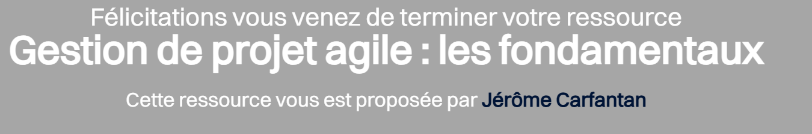

Google · Coursera✓ Terminé
Google UX Design
Recherche utilisateur, parcours, wireframes, prototypes et tests : des bases que je continue à travailler dans mes projets UX/UI.
Je complète mon expérience professionnelle par des formations en gestion de projet, en analyse de données et en conception d’interfaces. Cette page rassemble mes certificats, mes formations en cours et une sélection de ressources que je souhaite approfondir.
Des formations suivies, des repères concrets et une pratique qui continue.
Recherche utilisateur, parcours, wireframes, prototypes et tests : des bases que je continue à travailler dans mes projets UX/UI.
Une introduction aux valeurs du Manifeste Agile, aux principales méthodes agiles et aux facteurs de réussite d’un projet.

Capture personnelle de fin de ressource ; ce document n’est pas une certification.
Je prépare le certificat professionnel Google en gestion de projet sur Coursera pour approfondir la planification et le suivi de projet.
Approfondir la recherche utilisateur, les interfaces, les wireframes et les prototypes avec Figma et Miro.
Explorer des outils mentaux et des stratégies pour aborder les sujets difficiles et mieux organiser mon apprentissage.
Découvrir les risques numériques, la protection des données et les bases de la sécurité, avec Python, Linux et SQL.
Approfondir la modélisation des données et la création d’analyses et de tableaux de bord dans Power BI.
Comprendre le cadre Scrum et découvrir sa mise en pratique dans la gestion de projet.
Les justificatifs de formation sont disponibles sur demande.
Au-delà de l’UX, j’aime découvrir d’autres disciplines. Deux sujets auxquels je m’intéresse :
Je suis des cours de dessin pour développer mon sens de l’observation et explorer d’autres formes de création.
Je m’intéresse à la protection des données et aux risques liés aux usages numériques.